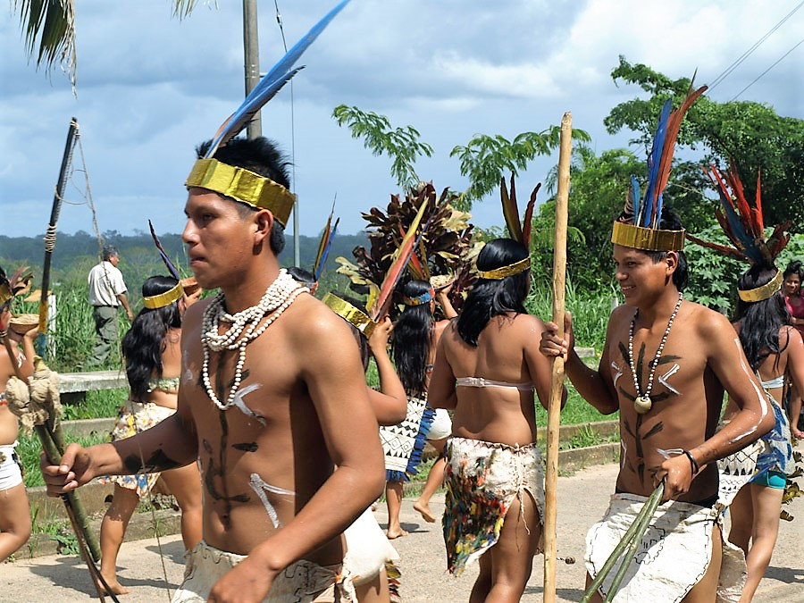
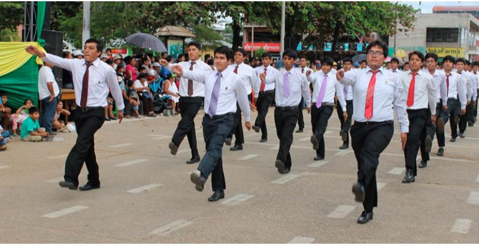
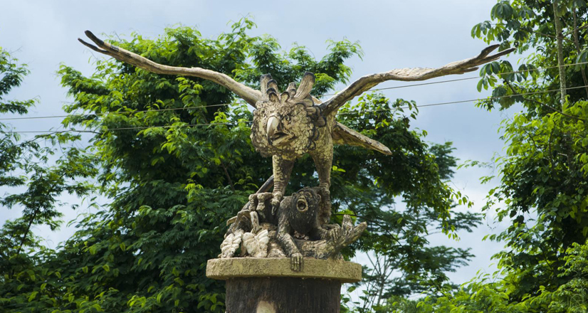

Aniversario de Puerto Maldonado: Una celebración amazónica
Cada 10 de julio, Puerto Maldonado celebra su aniversario con una serie de eventos culturales, desfiles y festividades que resaltan la riqueza de la Amazonía peruana. Es una oportunidad única para disfrutar de la música, danzas y gastronomía de la región.
Historia
Fundada en 1902 y convertida en capital de Madre de Dios en 1912, Puerto Maldonado ha crecido como un importante centro amazónico. Su aniversario conmemora su historia y su papel en el desarrollo de la región, destacando la identidad y tradiciones locales.



Horarios y Ubicación
- Ubicación: Puerto Maldonado, región de Madre de Dios, Perú.
- Fecha de celebración: 10 de julio.
- Eventos destacados: Desfiles, ferias gastronómicas, conciertos y actividades culturales.
Consejos para Visitantes
- Llega con anticipación: Los eventos principales atraen a muchos visitantes, así que asegúrate de encontrar un buen lugar.
- Prueba la gastronomía local: Degusta platos tradicionales como el juane, tacacho con cecina y refrescos amazónicos.
- Participa en las festividades: Disfruta de los bailes, conciertos y actividades que se organizan en la ciudad.
- Usa ropa ligera: El clima amazónico es cálido y húmedo, así que vístete cómodamente.
- Consulta el programa oficial: Verifica los horarios y ubicaciones de los eventos para no perderte ninguna actividad.